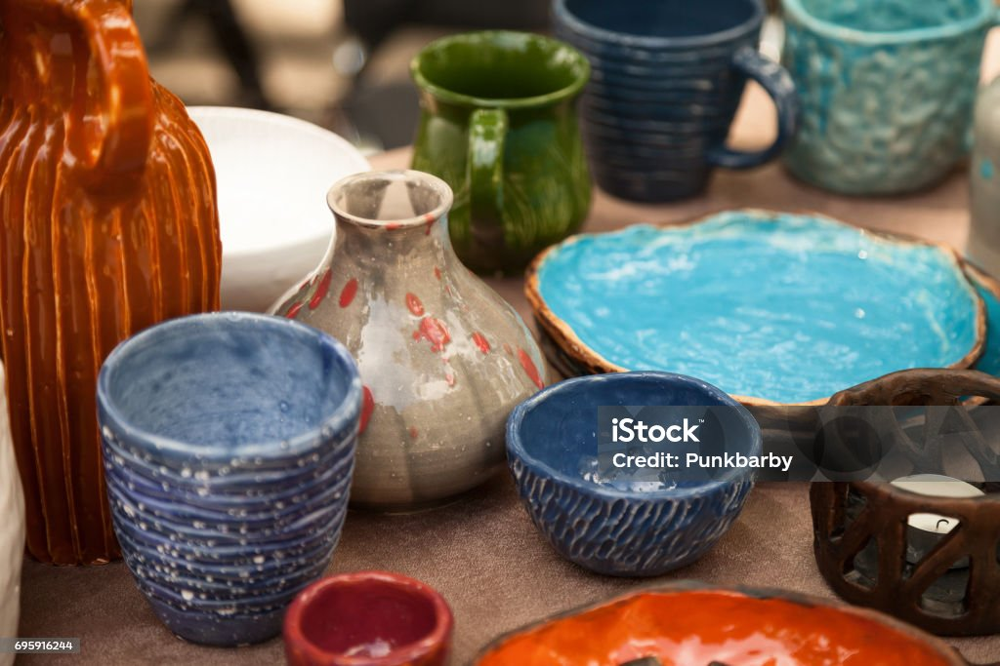

Our Products
Discover handmade pottery.


⭐ Product 1
Description of product 1.
⭐ Product 2
Description of product 2.
⭐ Product 3
Description of product 3.
⭐ Product 4
Description of product 4.
⭐ Product 5
Description of product 5.
⭐ Product 6
Description of product 6.
| Product | Price | Stock |
|---|---|---|
| Product 1 | $10 | In Stock |
| Product 2 | $20 | Limited |
| Product 3 | $30 | Out of Stock |